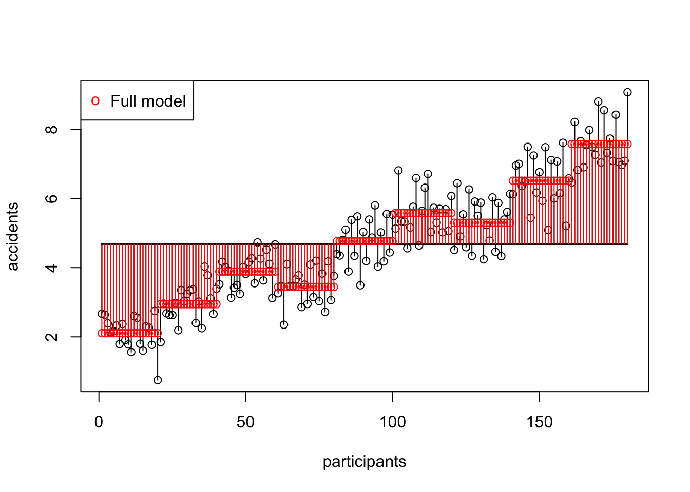
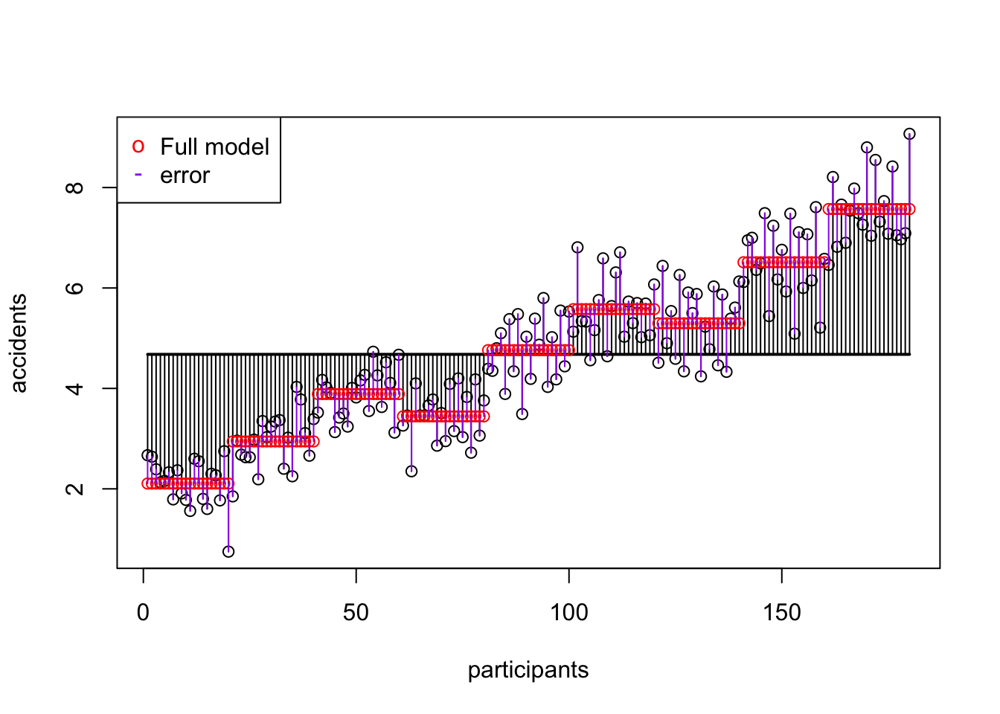

ANOVA
Independent factorial
Klinkenberg
9 oct 2020
Inhoud
Independent factorial ANOVA
Two or more independent variables with two or more categories. One dependent variable.
Independent factorial ANOVA
The independent factorial ANOVA analyses the variance of multiple independent variables (Factors) with two or more categories.
Effects and interactions:
- 1 dependent/outcome variable
- 2 or more independent/predictor variables
- 2 or more cat./levels
Assumptions
- Continuous variable
- Random sample
- Normaly distributed
- Shapiro-Wilk test
- Equal variance within groups
- Levene’s test
Formulas
| Variance | Sum of squares | df | Mean squares | F-ratio |
|---|---|---|---|---|
| Model | \(\text{SS}_{\text{model}} = \sum{n_k(\bar{X}_k-\bar{X})^2}\) | \(k_{model}-1\) | \(\frac{\text{SS}_{\text{model}}}{\text{df}_{\text{model}}}\) | \(\frac{\text{MS}_{\text{model}}}{\text{MS}_{\text{error}}}\) |
| \(\hspace{2ex}A\) | \(\text{SS}_{\text{A}} = \sum{n_k(\bar{X}_k-\bar{X})^2}\) | \(k_A-1\) | \(\frac{\text{SS}_{\text{A}}}{\text{df}_{\text{A}}}\) | \(\frac{\text{MS}_{\text{A}}}{\text{MS}_{\text{error}}}\) |
| \(\hspace{2ex}B\) | \(\text{SS}_{\text{B}} = \sum{n_k(\bar{X}_k-\bar{X})^2}\) | \(k_B-1\) | \(\frac{\text{SS}_{\text{B}}}{\text{df}_{\text{B}}}\) | \(\frac{\text{MS}_{\text{B}}}{\text{MS}_{\text{error}}}\) |
| \(\hspace{2ex}AB\) | \(\text{SS}_{A \times B} = \text{SS}_{\text{model}} - \text{SS}_{\text{A}} - \text{SS}_{\text{B}}\) | \(df_A \times df_B\) | \(\frac{\text{SS}_{\text{AB}}}{\text{df}_{\text{AB}}}\) | \(\frac{\text{MS}_{\text{AB}}}{\text{MS}_{\text{error}}}\) |
| Error | \(\text{SS}_{\text{error}} = \sum{s_k^2(n_k-1)}\) | \(N-k_{model}\) | \(\frac{\text{SS}_{\text{error}}}{\text{df}_{\text{error}}}\) | |
| Total | \(\text{SS}_{\text{total}} = \text{SS}_{\text{model}} + \text{SS}_{\text{error}}\) | \(N-1\) | \(\frac{\text{SS}_{\text{total}}}{\text{df}_{\text{total}}}\) |
Example
In this example we will look at the amount of accidents in a car driving simulator while subjects where given varying doses of speed and alcohol.
- Dependent variable
- Accidents
- Independent variables
- Speed
- None
- Small
- Large
- Alcohol
- None
- Small
- Large
- Speed
| person | alcohol | speed | accidents |
|---|---|---|---|
| 1 | 1 | 1 | 0 |
| 2 | 1 | 2 | 2 |
| 3 | 1 | 3 | 4 |
| 4 | 2 | 1 | 6 |
| 5 | 2 | 2 | 8 |
| 6 | 2 | 3 | 10 |
| 7 | 3 | 1 | 12 |
| 8 | 3 | 2 | 14 |
| 9 | 3 | 3 | 16 |
Data
SSmodel
| Variance | Sum of squares | df | Mean squares | F-ratio |
|---|---|---|---|---|
| Model | \(\text{SS}_{\text{model}} = \sum{n_k(\bar{X}_k-\bar{X})^2}\) | \(k_{model}-1\) | \(\frac{\text{SS}_{\text{model}}}{\text{df}_{\text{model}}}\) | \(\frac{\text{MS}_{\text{model}}}{\text{MS}_{\text{error}}}\) |
## speed alcohol accidents n
## 1 much much 7.5720 20
## 2 none much 5.2970 20
## 3 some much 6.5125 20
## 4 much none 3.8880 20
## 5 none none 2.1060 20
## 6 some none 2.9445 20
## 7 much some 5.5790 20
## 8 none some 3.4435 20
## 9 some some 4.7625 20SS.model <- sum((exp.accidents - mean(data$accidents))^2); SS.model## [1] 494.2205m.k1 = mean(subset(data, speed == "none" & alcohol == "none", select = "accidents")$accidents)
m.k2 = mean(subset(data, speed == "none" & alcohol == "some", select = "accidents")$accidents)
m.k3 = mean(subset(data, speed == "none" & alcohol == "much", select = "accidents")$accidents)
m.k4 = mean(subset(data, speed == "some" & alcohol == "none", select = "accidents")$accidents)
m.k5 = mean(subset(data, speed == "some" & alcohol == "some", select = "accidents")$accidents)
m.k6 = mean(subset(data, speed == "some" & alcohol == "much", select = "accidents")$accidents)
m.k7 = mean(subset(data, speed == "much" & alcohol == "none", select = "accidents")$accidents)
m.k8 = mean(subset(data, speed == "much" & alcohol == "some", select = "accidents")$accidents)
m.k9 = mean(subset(data, speed == "much" & alcohol == "much", select = "accidents")$accidents)
n.k1 = n.k2 = n.k3 = n.k4 = n.k5 = n.k6 = n.k7 = n.k8 = n.k9 = 20ss.m.k1 = n.k1 * (m.k1 - mean(accidents))^2
ss.m.k2 = n.k2 * (m.k2 - mean(accidents))^2
ss.m.k3 = n.k3 * (m.k3 - mean(accidents))^2
ss.m.k4 = n.k4 * (m.k4 - mean(accidents))^2
ss.m.k5 = n.k5 * (m.k5 - mean(accidents))^2
ss.m.k6 = n.k6 * (m.k6 - mean(accidents))^2
ss.m.k7 = n.k7 * (m.k7 - mean(accidents))^2
ss.m.k8 = n.k8 * (m.k8 - mean(accidents))^2
ss.m.k9 = n.k9 * (m.k9 - mean(accidents))^2
ss.model = sum(ss.m.k1,ss.m.k2,ss.m.k3,ss.m.k4,ss.m.k5,ss.m.k6,ss.m.k7,ss.m.k8,ss.m.k9)
ss.model## [1] 494.2205SSmodel visual
# Plot all data points
plot(accidents,
xlab = 'participants')
# With the mean
lines(1:n,rep(mean(accidents),n),col='black',lwd=2)
# The black lines are the total variance, the deviation from the mean.
segments(1:n, mean(accidents), 1:n, accidents)
# The model predicts the accidents scores
points(1:n,exp.accidents, col='red')
p <- recordPlot()
# The black lines are the total variance, the deviation from the mean.
segments(1:n, exp.accidents, 1:n, mean(accidents), col = "red")
# Add legend to plot
legend("topleft",
pch = c("o"),
col = c("red"),
legend = c("Full model") )
SSerror
| Variance | Sum of squares | df | Mean squares | F-ratio |
|---|---|---|---|---|
| Error | \(\text{SS}_{\text{error}} = \sum{s_k^2(n_k-1)}\) | \(N-k\) | \(\frac{\text{SS}_{\text{error}}}{\text{df}_{\text{error}}}\) |
v.k1 = var(subset(data, speed == "none" & alcohol == "none", select = "accidents")$accidents)
v.k2 = var(subset(data, speed == "none" & alcohol == "some", select = "accidents")$accidents)
v.k3 = var(subset(data, speed == "none" & alcohol == "much", select = "accidents")$accidents)
v.k4 = var(subset(data, speed == "some" & alcohol == "none", select = "accidents")$accidents)
v.k5 = var(subset(data, speed == "some" & alcohol == "some", select = "accidents")$accidents)
v.k6 = var(subset(data, speed == "some" & alcohol == "much", select = "accidents")$accidents)
v.k7 = var(subset(data, speed == "much" & alcohol == "none", select = "accidents")$accidents)
v.k8 = var(subset(data, speed == "much" & alcohol == "some", select = "accidents")$accidents)
v.k9 = var(subset(data, speed == "much" & alcohol == "much", select = "accidents")$accidents)ss.e.k1 = v.k1 * (n.k1 - 1)
ss.e.k2 = v.k2 * (n.k2 - 1)
ss.e.k3 = v.k3 * (n.k3 - 1)
ss.e.k4 = v.k4 * (n.k4 - 1)
ss.e.k5 = v.k5 * (n.k5 - 1)
ss.e.k6 = v.k6 * (n.k6 - 1)
ss.e.k7 = v.k7 * (n.k7 - 1)
ss.e.k8 = v.k8 * (n.k8 - 1)
ss.e.k9 = v.k9 * (n.k9 - 1)
ss.error = sum(ss.e.k1,ss.e.k2,ss.e.k3,ss.e.k4,ss.e.k5,ss.e.k6,ss.e.k7,ss.e.k8,ss.e.k9)
ss.error## [1] 66.34642SSerror visual
p
# Now we can add the error of this model
segments(1:n, accidents, 1:n, exp.accidents, col='purple')
# Add legend to plot
legend("topleft",
pch = c("o", "-"),
col = c("red", "purple"),
legend = c("Full model", "error") )
SSA Speed
| Variance | Sum of squares | df | Mean squares | F-ratio |
|---|---|---|---|---|
| \(\hspace{2ex}A\) | \(\text{SS}_{\text{A}} = \sum{n_k(\bar{X}_k-\bar{X})^2}\) | \(k_A-1\) | \(\frac{\text{SS}_{\text{A}}}{\text{df}_{\text{A}}}\) | \(\frac{\text{MS}_{\text{A}}}{\text{MS}_{\text{error}}}\) |
m.s1 = mean(subset(data, speed == "none", select = "accidents")$accidents)
m.s2 = mean(subset(data, speed == "some", select = "accidents")$accidents)
m.s3 = mean(subset(data, speed == "much", select = "accidents")$accidents)
n.s1 = n.s2 = n.s3 = 60ss.s1 = n.s1 * (m.s1 - mean(accidents))^2
ss.s2 = n.s2 * (m.s2 - mean(accidents))^2
ss.s3 = n.s3 * (m.s3 - mean(accidents))^2
ss.speed = sum(ss.s1,ss.s2,ss.s3)
ss.speed## [1] 128.1639SSA Speed Visual
p
# Deviation of speed
points(1:n, data$means.speed, col='green')
segments(1:n, mean(accidents), 1:n, data$means.speed, col='green')
# Add legend to plot
legend("topleft",
pch = c("o", "o"),
col = c("green", "red"),
legend = c("speed", "Full model") )
SSB Alcohol
| Variance | Sum of squares | df | Mean squares | F-ratio |
|---|---|---|---|---|
| \(\hspace{2ex}B\) | \(\text{SS}_{\text{B}} = \sum{n_k(\bar{X}_k-\bar{X})^2}\) | \(k_B-1\) | \(\frac{\text{SS}_{\text{B}}}{\text{df}_{\text{B}}}\) | \(\frac{\text{MS}_{\text{B}}}{\text{MS}_{\text{error}}}\) |
m.a1 = mean(subset(data, alcohol == "none", select = "accidents")$accidents)
m.a2 = mean(subset(data, alcohol == "some", select = "accidents")$accidents)
m.a3 = mean(subset(data, alcohol == "much", select = "accidents")$accidents)
n.a1 = n.a2 = n.a3 = 60ss.a1 = n.a1 * (m.a1 - mean(accidents))^2
ss.a2 = n.a2 * (m.a2 - mean(accidents))^2
ss.a3 = n.a3 * (m.a3 - mean(accidents))^2
ss.alcohol = sum(ss.a1,ss.a2,ss.a3)
ss.alcohol## [1] 364.1458SSB Alcohol Visual
p
# Deviation of alcohol
points(1:n, data$means.alcohol,col='orange',type="p")
segments(1:n, mean(accidents), 1:n, data$means.alcohol, col='orange')
# Add legend to plot
legend("topleft",
pch = c("o", "o"),
col = c("orange", "red"),
legend = c("alcohol", "Full model") )
SSAB Alcohol x Speed
| Variance | Sum of squares | df | Mean squares | F-ratio |
|---|---|---|---|---|
| \(\hspace{2ex}AB\) | \(\text{SS}_{A \times B} = \text{SS}_{\text{model}} - \text{SS}_{\text{A}} - \text{SS}_{\text{B}}\) | \(df_A \times df_B\) | \(\frac{\text{SS}_{\text{AB}}}{\text{df}_{\text{AB}}}\) | \(\frac{\text{MS}_{\text{AB}}}{\text{MS}_{\text{error}}}\) |
# Sums of squares for the interaction between speed and alcohol
ss.speed.alcohol <- ss.model - ss.speed - ss.alcohol
ss.speed.alcohol## [1] 1.910727Mean Squares
Mean squares for:
- Speed
- Alcohol
- Speed \(\times\) Alcohol
\[\begin{aligned} F_{Speed} &= \frac{{MS}_{Speed}}{{MS}_{error}} \\ F_{Alcohol} &= \frac{{MS}_{Alcohol}}{{MS}_{error}} \\ F_{Alcohol \times Speed} &= \frac{{MS}_{Alcohol \times Speed}}{{MS}_{error}} \\ \end{aligned}\]
Interaction
\[F_{Alcohol \times Speed}\]
N = length(accidents)
k.speed = 3
k.alcohol = 3
k.model = 9
df.speed = k.speed - 1
df.alcohol = k.alcohol - 1
df.speed.alcohol = df.speed * df.alcohol
ms.speed.alcohol = ss.speed.alcohol / df.speed.alcohol
df.error = N - k.model
ms.error = ss.error / df.error\(P\)-value
F.speed.alcohol = ms.speed.alcohol / ms.error
F.speed.alcohol## [1] 1.231168library(visualize)
visualize.f(F.speed.alcohol, df.speed.alcohol, df.error, section = "upper")
F.values = seq(0, 10, .01)
plot(F.values, df(F.values, df.speed.alcohol, df.error), type = "l", ylab="density", main = "H0 and HA F-distribution")
critical.value = qf(.95, df.speed.alcohol, df.error)
critical.range = seq(critical.value, 10, .01)
polygon(c(critical.range,rev(critical.range)),
c(critical.range*0, rev(df(critical.range, df.speed.alcohol, df.error, ncp = 5))), col = "green")
lines(F.values, df(F.values, df.speed.alcohol, df.error, ncp = 5))
polygon(c(critical.range,rev(critical.range)),
c(critical.range*0, rev(df(critical.range, df.speed.alcohol, df.error))), col = rgb(1,0,0,1), density = 40, angle = -45)
p.range = seq(F.speed.alcohol, 10, .01)
polygon(c(p.range,rev(p.range)),
c(p.range*0, rev(df(p.range, df.speed.alcohol, df.error))), col = rgb(0,0,1,.6), density = 20)
Contrast
Planned comparisons
- Exploring differences of theoretical interest
- Higher precision
- Higher power
Post-Hoc
Unplanned comparisons
- Exploring all possible differences
- Adjust T value for inflated type 1 error
Effect size
General effect size measures
- Amount of explained variance \(R^2\) also called eta squared \(\eta^2\).
- Omega squared \(\omega^2\)
Effect sizes of contrasts or post-hoc comparisons
- Cohen’s \(r\) gives the effect size for a specific comparison
- \(r_{Contrast} = \sqrt{\frac{t^2}{t^2+{df}}}\)